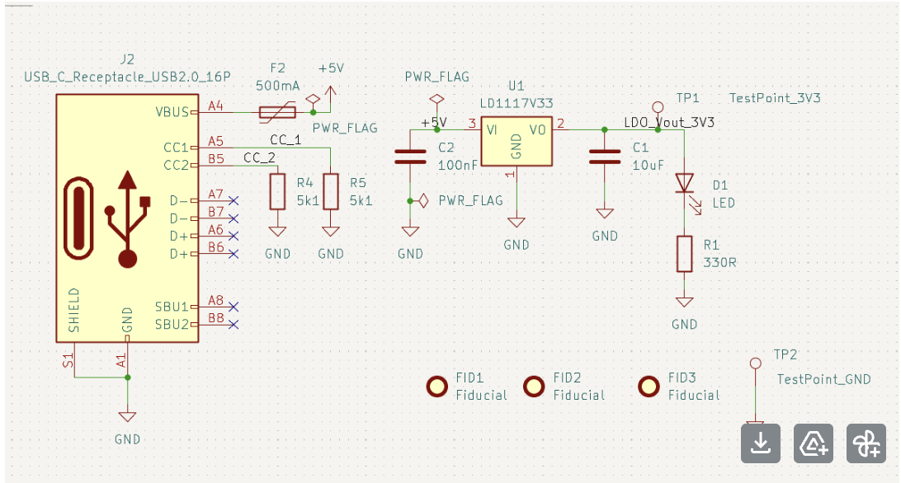
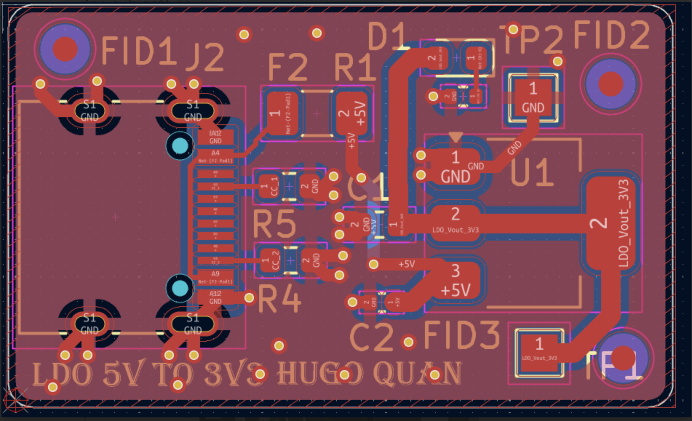

Project Overview
This portfolio piece highlights two custom printed circuit boards designed to improve the day-to-day workflow and testing capabilities of our engineering team. While they serve different purposes, both boards required a strict understanding of electrical fundamentals: one focused on advanced digital signal integrity at gigahertz frequencies, and the other on providing simple, ultra-clean analog power.
Part 1: High-Speed USB 3.0 Hub
Standard off-the-shelf hubs often fail under heavy industrial use or lack specific mounting configurations. I designed a custom 4-port USB 3.0 hub to handle 5 Gbps (Gigabits per second) SuperSpeed data transmission reliably in a demanding team environment.

High-Speed Signal Integrity & Transmission Lines
Designing for USB 3.0 is fundamentally different from lower-speed protocols. At 5 Gbps, copper traces no longer act as simple wires; they act as transmission lines. Any change in the physical geometry of the trace (width, distance to the ground plane, or sharp corners) causes a change in impedance. This impedance mismatch causes the high-speed data signal to reflect back toward the source, which degrades the "eye diagram" and causes bit errors.
To ensure pristine signal integrity, I implemented the following layout constraints:
- 90-Ohm Differential Routing: USB 3.0 uses differential pairs (SSTX+/SSTX- and SSRX+/SSRX-). I calculated the exact trace width and spacing to achieve a strict $90\Omega$ differential impedance across the board.
- Phase Skew & Length Matching: The positive and negative signals of a differential pair must arrive at the receiver at the exact same picosecond. Where traces had to navigate corners, the outer trace naturally became longer. I utilized CAD tools to add "serpentine" tuning bumps to the shorter trace, equalizing their physical lengths to within fractions of a millimeter.
- Continuous Return Paths: High-frequency return currents follow the path of least inductance, which is directly underneath the signal trace. I designed a 4-layer stackup ensuring a solid, unbroken ground plane existed immediately beneath all SuperSpeed traces to prevent EMI radiation and cross-talk.
Key Takeaways & Skills Gained
This project was a deep dive into high-frequency hardware design, bridging the gap between theoretical physics and practical PCB layout. Specifically, I gained:
- Component Selection for High-Speed: Learned how to select ESD protection diodes with ultra-low parasitic capacitance (e.g., $< 0.5\text{pF}$). Standard ESD diodes would act as low-pass filters and accidentally shunt the 5 GHz data signals to ground.
- PCB Stackup Design: Mastered the configuration of 4-layer boards (Signal - Ground - Power - Signal) to control dielectric thickness and ensure solid reference planes for controlled impedance routing.
- Via Optimization: Learned to minimize via usage on SuperSpeed lines. When vias were strictly necessary, I learned to place adjacent ground return vias to allow the return current to transition layers alongside the signal.
Part 2: 5V to 3.3V LDO Power Board
To support sensitive analog and sensor bench testing, the team needed a reliable, ultra-clean $3.3\text{V}$ power source. While switching power supplies (buck converters) are highly efficient at stepping down voltage, they generate high-frequency switching noise (ripple) that can easily corrupt microvolt-level sensor readings.
I designed a simple, dedicated breakout board using a Low-Dropout (LDO) linear regulator to step down a standard $5\text{V}$ USB input to $3.3\text{V}$. Because an LDO uses an internal linear pass transistor instead of high-frequency switching, it provides an exceptionally flat DC voltage with a high Power Supply Rejection Ratio (PSRR).



While linear regulators burn off excess voltage as heat, the power dissipation here is highly manageable for day-to-day use. The dissipated power is calculated as $P_{dissipated} = (V_{in} - V_{out}) \times I_{load}$. With a $5\text{V}$ input and $3.3\text{V}$ output, the voltage drop is only $1.7\text{V}$. Even at a $500\text{mA}$ draw, the chip only dissipates $0.85\text{W}$ of heat, which is easily managed by a small copper pour connected to the ground tab on the PCB.